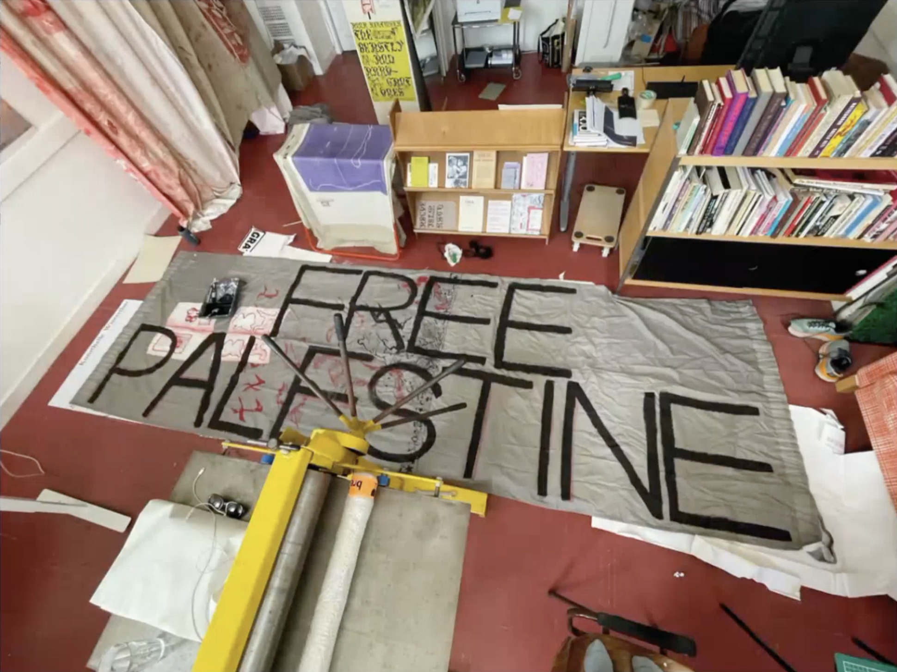
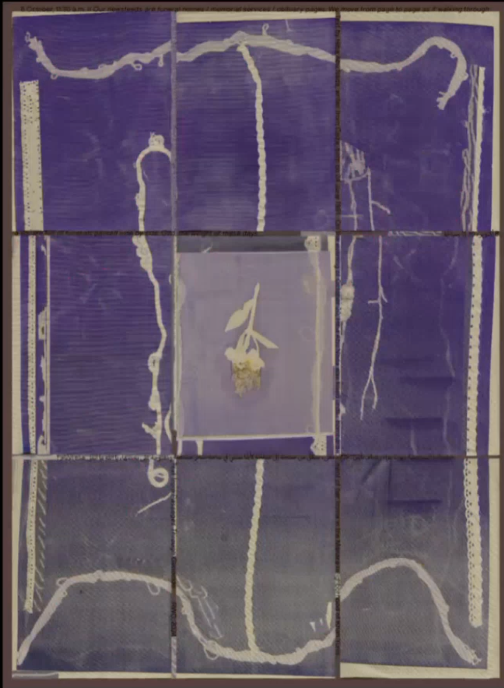

Thank you so much for joining us today. I'm very-very glad to start this series of lectures with you two. So I've introduced the assignment already and the project to the students, it's a question revolving around the term neutrality in the field of graphic design, which I believe is a term that can be put in perspective, questioned, or criticized.
I'm gonna read a biography of you and your practice and what I propose is that either we exchange on a question-answer mode or you present and then we ask questions.
Yes.
Which mode do you prefer?
Yeah, we were going to ask you the same.
We're really interested to have a discussion with you but also we could give you a kind of quick and dense presentation of our work. It's either or, I mean, you know, we can go straight in questions also.
We think, like we have a presentation that we can give that is between 20 minutes to half an hour, something like that.
Maybe it's shorter. Yeah, 20, I think.
Yeah.
Sounds perfect! Then I will read your bio and then maybe start with the first question, which will then I'm sure evolve into your presentation, right?.
Yeah. Perfect.
So correct me if I'm wrong with the bio, I copied it from somewhere. You let me know if there are some updates in between.
So, graphic designers Elizabeth Rafstedt and Johanna Ehde form Rietlanden Women's Office. Their practice is interested in current and historical issues connected to reproductive work and collaborative graphic design. The basis of their work is a printed publication series called MsHeresies that we have here that the students looked at already. Inquiry into collaborative graphic design practices and the ornament as a form of work critique and the ornament sits at the center of their practice, where they consider ornaments not simply as added decoration but as traces of the specific conditions under which a work was made. They look at the traces of reproductive work, such as lines of alteration and correction, flashing elements, improvise type, manifestations of urgency, become the ornaments which makes social relations legible. The search for ornaments, disruptive, diffuse and aesthetic qualities, and sketch the ornament as a point where aesthetics and politics intertwine.
I hope that was up to date.
For sure.
Yeah.
Maybe we can start this presentation by you presenting yourselves, maybe, and now we had a bit of a glimpse into your practice, but what we're curious to hear is well, firstly who you are, how your collaboration works and maybe you can start talking about MsHeresies.
Yeah, thank you!
Great, now I'll turn this [camera] around.
Also, I am Johanna, and this is Elizabeth. We're really happy to see that you're in a space together and not just on your own laptop. It’s very nice
Yeah, and it's so nice also when you have this online lecture that you actually see someone and at the same time, so that's super nice.
Can we show you a slide show actually?
Yeah, of course.
Okay, share.
We are in our studio now in Amsterdam and here is a picture  also from our studio a couple of weeks ago.
Do you see the slideshow now?
Yes, we do.
Great. We thought of this- By the way, do you see us as well at the same time or?
Yeah, we can see both.
Okay, so we thought of this, when you came with this topic of the neutral and the connection to neutrality and graphic design. We also wanted to start here in our studio because it was sharing space together that made us form a group after our studies.
I mean, I think we were very intrigued by this. The word neutral is very key right now to us also like, what is happening with our work at the moment.
Basically, maybe this introduction to our work, we can start with the work and then we can speak a little bit more about why we have chosen to have a collective practice. But what you can see on the screen now is a poster  that was supposed to be shown in Leipzig at the modern Museum of Art there at this very moment, in connection to the book, the Buchmesse, the book fair in Leipzig that they have there yearly. And it is a republishing of a Palestinian poet and her name is Hila Abunnada and she was murdered, she was killed during the bombings of her home in Gaza. The text comes from a publishing platform that you should really look up—GazaPassages.org—and it's a publishing project called Passages Through Genocide. And they asked for everyone to republish and distribute the work from these Palestinian poets. On this poster it reads from the 8th of October last year. It reads, and this is Hila Abunnada, the writer, she wrote "Our news feeds of funeral homes, memorial services, obituary pages, we move from page to page as if walking through a square full of funerals packed side-by-side. God, the weight of these days." And this poster is not shown in Leipzig now because it is not neutral.